1. フレームアニメーション
走るアニメーションを作成しながら、「フレームアニメーション」の基本的な知識を勉強していきます。
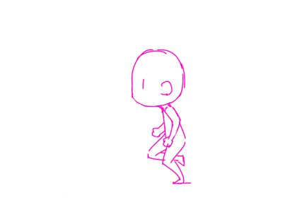
1-1. ファイルの新規作成
- 画面左の「新規作成」、もしくは『ファイル > 新規...』、もしくはショートカット『command + n』。
- 「キャラクターアニメーション」-「SVG」を選び、「作成」をクリック。

- 忘れないうちに保存しておく。（Adobe Animateファイルの拡張子は「.fla」）
※「Adobe Animete」は非常に落ちやすいので、こまめに保存すること！
1-2. 用語説明
- 【フレームレート】
- 描画したグラフィックなどを横軸の時間で制御する。タイムラインの1マス1マスのことをフレーム、1秒間に進むフレーム数のことをフレームレート(FPS)という。
フレームレートが高ければより滑らかに表示されるが、その分容量や動作の負荷が大きくなる。デジタル放送は29.97fps、映画やアニメーションは24fps、ゲームや遊技機などの映像は30fpsが主流。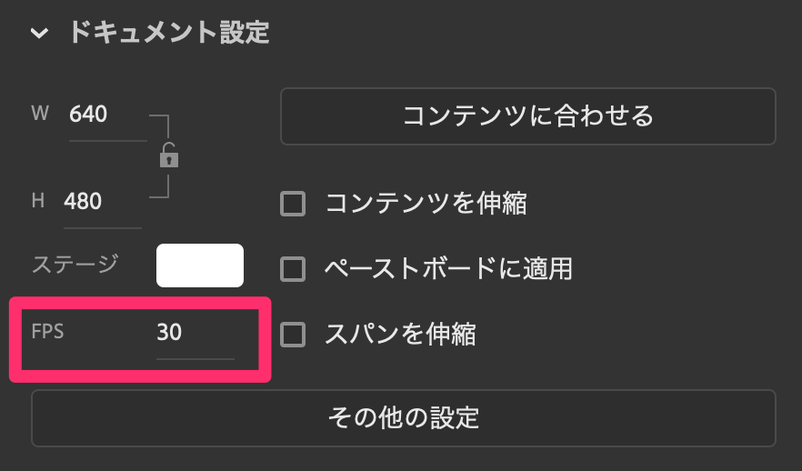
- 【キーフレーム】
- ステージに描画されている「シェイプ」や「シンボル（後で説明します）」の状態を記録し、アニメーションの始点や終点とするためのフレーム。
白い丸がついたフレームを空白キーフレームといい、アニメーションを明示的に終了させる際に使われる。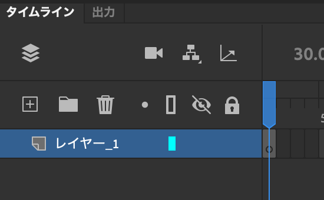
1-3. グラフィックの描画
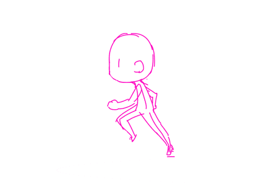
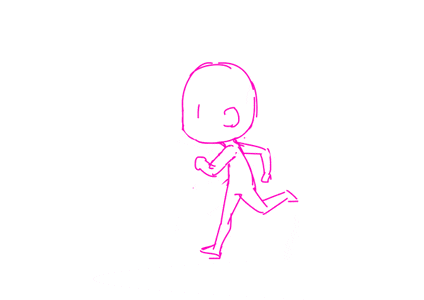
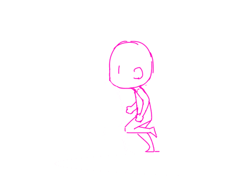
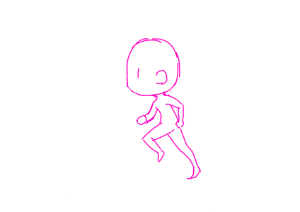
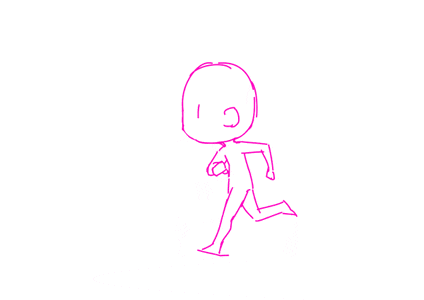
- 【手順】
-
- 1フレーム目のポーズをブラシツールで描画する。描いた内容が記録され、キーフレームの丸が黒くなる。
- 次のフレームをマウスでクリックし、右クリック「空白キーフレームに変換」を選択。（ショートカットはF7）
- ２フレーム目のポーズを描画する。その際、オニオンスキンをクリックしておくと描きやすい。
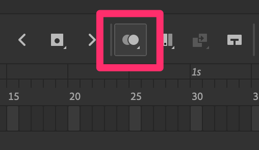
- フレームが小さくて見にくい場合は、下図の部分からタイムラインツールバーのカスタマイズやタイムラインビューのサイズ変更が可能。
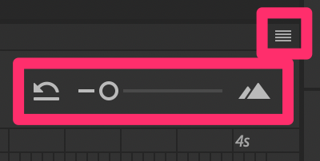
- ６フレーム目まで描画できたら、ループをクリックし範囲を調整したのち、タイムラインを再生してみる。
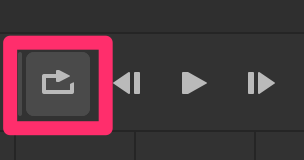
- スピードを落とすために、それぞれのキーフレームを右クリック「フレームの挿入」を選択。（ショートカットはF5）
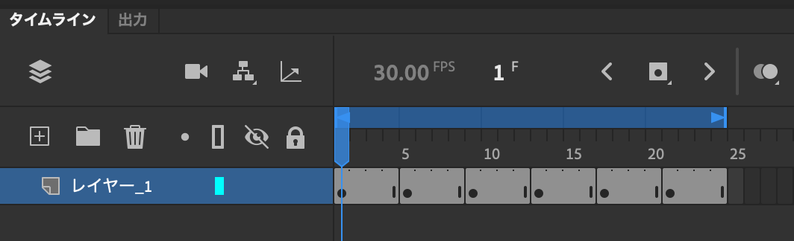
- 【ショートカット】
-
- 『enter』：再生／停止
- 『shift + ,』：最初のフレームへ
- 『shift + .』：最後のフレームへ
- 『.』：1フレーム進める
- 『,』：1フレーム戻る
- 『F7』：空白キーフレームに変換
- 『F6』：キーフレームに変換
- 『shift + F6』：キーフレームを削除
- 『F5』：フレームを挿入
- 『shift + F5』：フレームを削除
☆練習
様々なGIFアニメを参考に、フレームアニメーションを制作する。（6フレーム前後のもので良い）
※走るアニメーションはレイヤーをロック＆非表示にしておき、新しいレイヤーを作って描画すること。
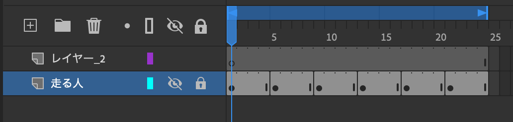
2. シンボル
描画したアニメーションを「シンボル」に変換することで、アニメーションを複製したり、自由に変形したりすることができる。
- 【手順】
-
- 走る人のレイヤーを右クリック「レイヤーをシンボルに変換」を選択。
- 任意の名前をつけ、種類を「グラフィック」にしてOK。
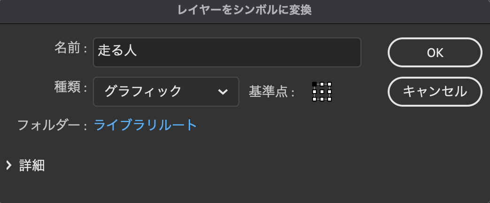
- プロパティインスペクタ内の「ライブラリパネル」に「グラフィックシンボル」が追加される。
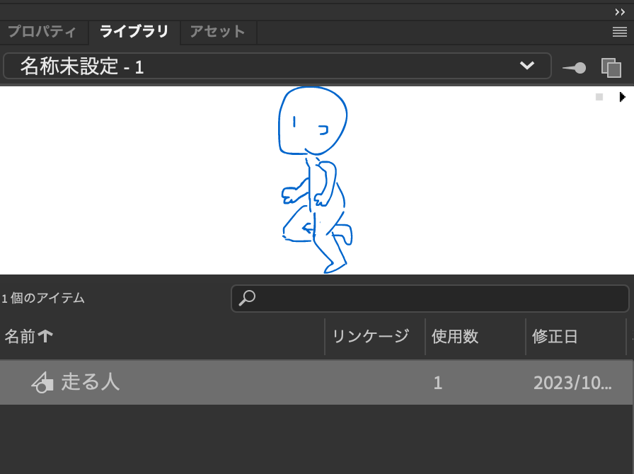
- 【シンボルの特徴】
-
- シンボルは独自のタイムラインを持っている。
- シンボルをダブルクリックすると編集モードに入る。（編集モードから戻る場合は、左上の「シーン1」をクリックするか、ステージ上の何もない部分をダブルクリック）
- シーン1のタイムライン（メインタイムライン）とシンボルのタイムラインは連動している。
- 「ライブラリパネル」からシンボルをステージ上にドラッグ＆ドロップすると、シンボルのコピー（インスタンス）が作られる。
- インスタンスは個別に変形することができるが、シンボルを編集するとすべてのインスタンスに適応される。
- 「プロパティパネル」からループの設定をすることで、再生の仕方を制御できる。
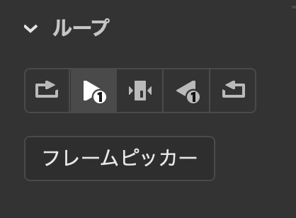
- 【空のシンボルの作成】
-
- メニュー「挿入 < 新規シンボル」、もしくはショートカット『command + F8』。
- 【シンボルの削除】
-
- 「ライブラリパネル」からシンボルを右クリック「削除」。
3. 課題
走る人の周りで様々なことが起こる、5秒間（150フレーム）のアニメーションを制作する。
- 【提出先】
- Googleドライブ
- 【注意点】
-
- 走る人は描き直しても良い。
- 線だけでも色付きでも、どちらでも良い。
- 背景を描いても良い。
- インスタンスごとにレイヤーを分けると作業しやすい。
3-1. アニメーションの書き出し
- メニュー「ファイル < 書き出し < アニメーションGIFを書き出し…」をクリック。
- 色々と設定ができるか、今回はそのまま「保存」をクリック。
- 任意の場所に保存。
3-2. GIFアニメーションの読み込み
メニュー「ファイル < 読み込み」から、ステージまたはライブラリに読み込む。（ステージまたはライブラリにドラッグ＆ドロップでも可）
- 【ステージに読み込んだ時の注意点】
-
- それぞれの画像がライブラリパネルに格納され、タイムラインに配置される。
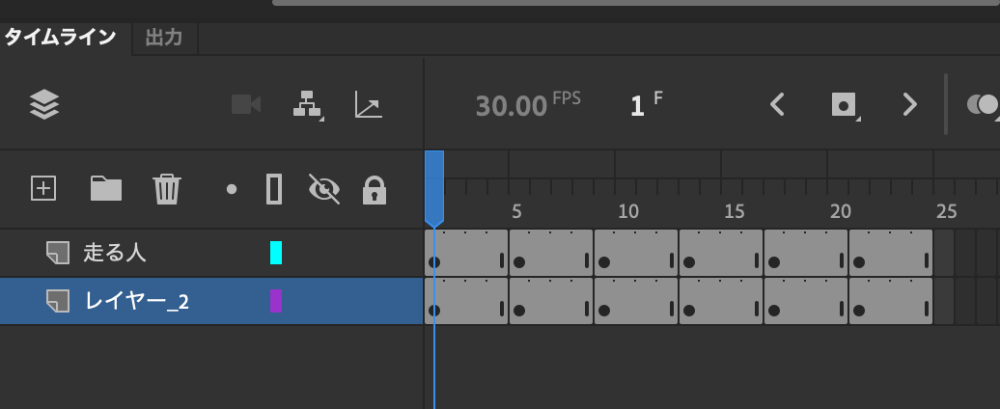
- すべての画像を一括で編集（移動）したい場合は、「複数のフレームを編集」をクリックする。
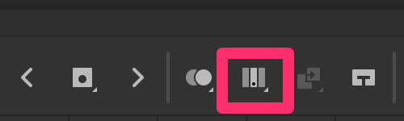
- 作業が終わったら、読み込んだ使わない画像は削除しておく。
- それぞれの画像がライブラリパネルに格納され、タイムラインに配置される。
- 【ライブラリに読み込んだ時の注意点】
-
- それぞれの画像とシンボルがライブラリパネルに格納される。
- 格納されたシンボルは種類が「ムービークリップ」のため、配置されたタイムラインと連動して再生されない。
- シンボルの種類は「プロパティパネル」から、あとから変更可能。
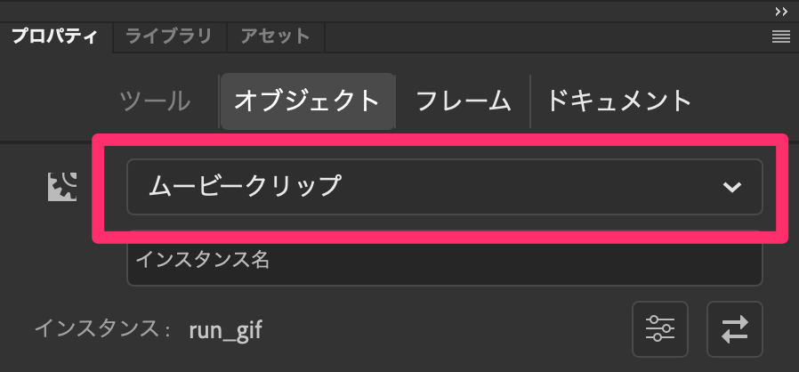